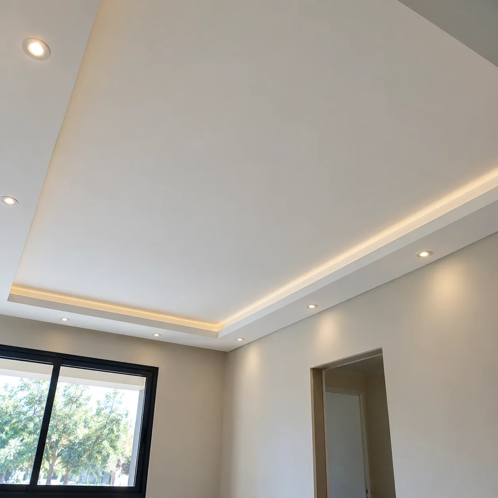
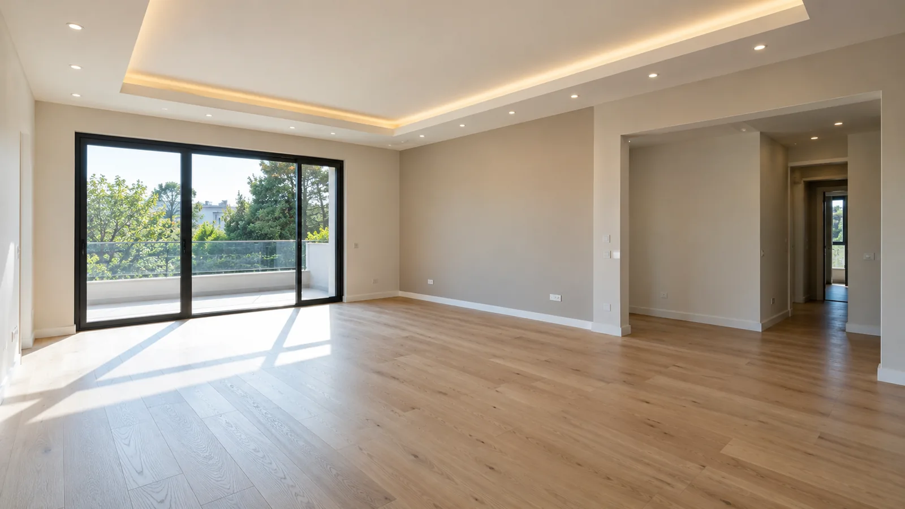
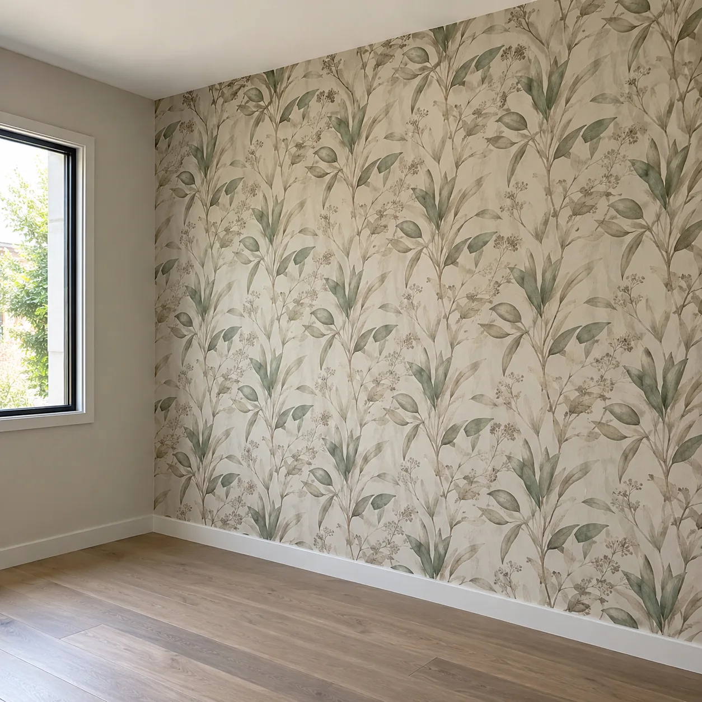
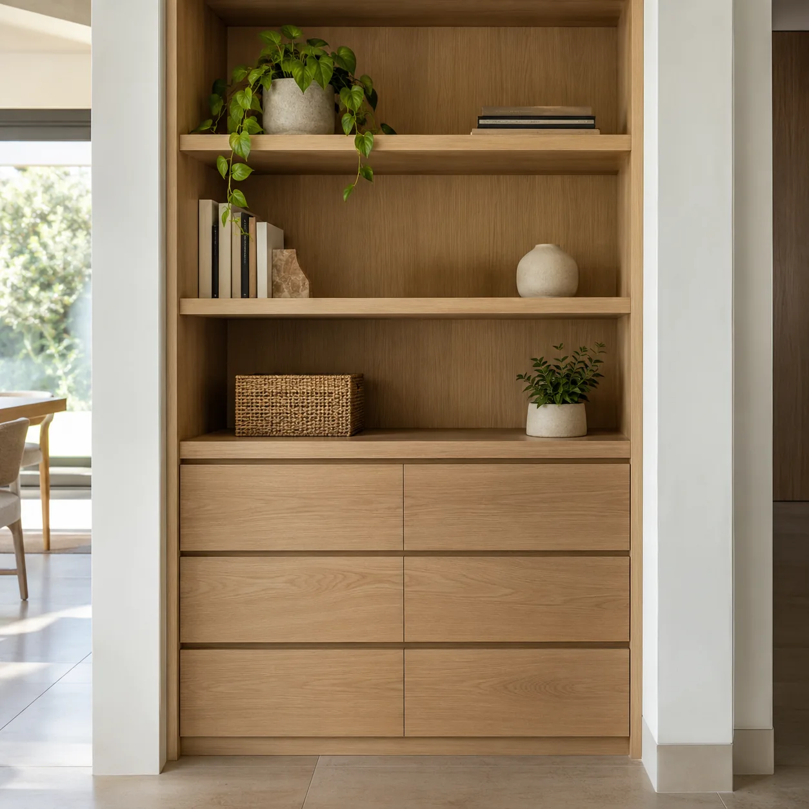
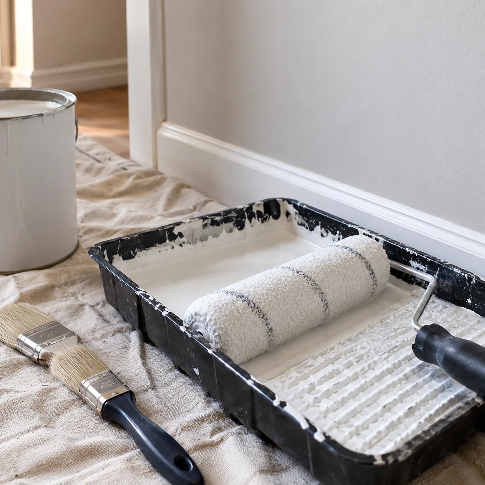
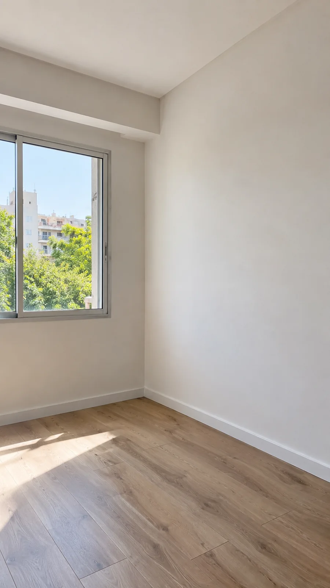
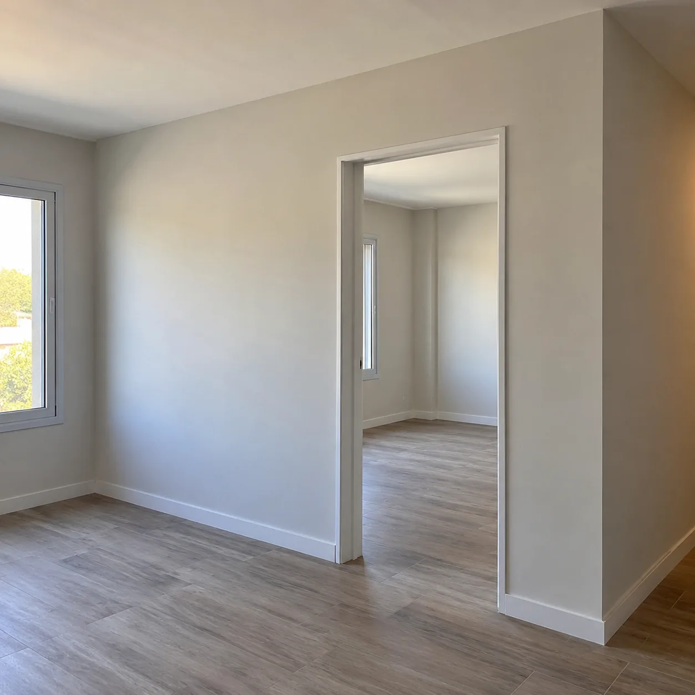
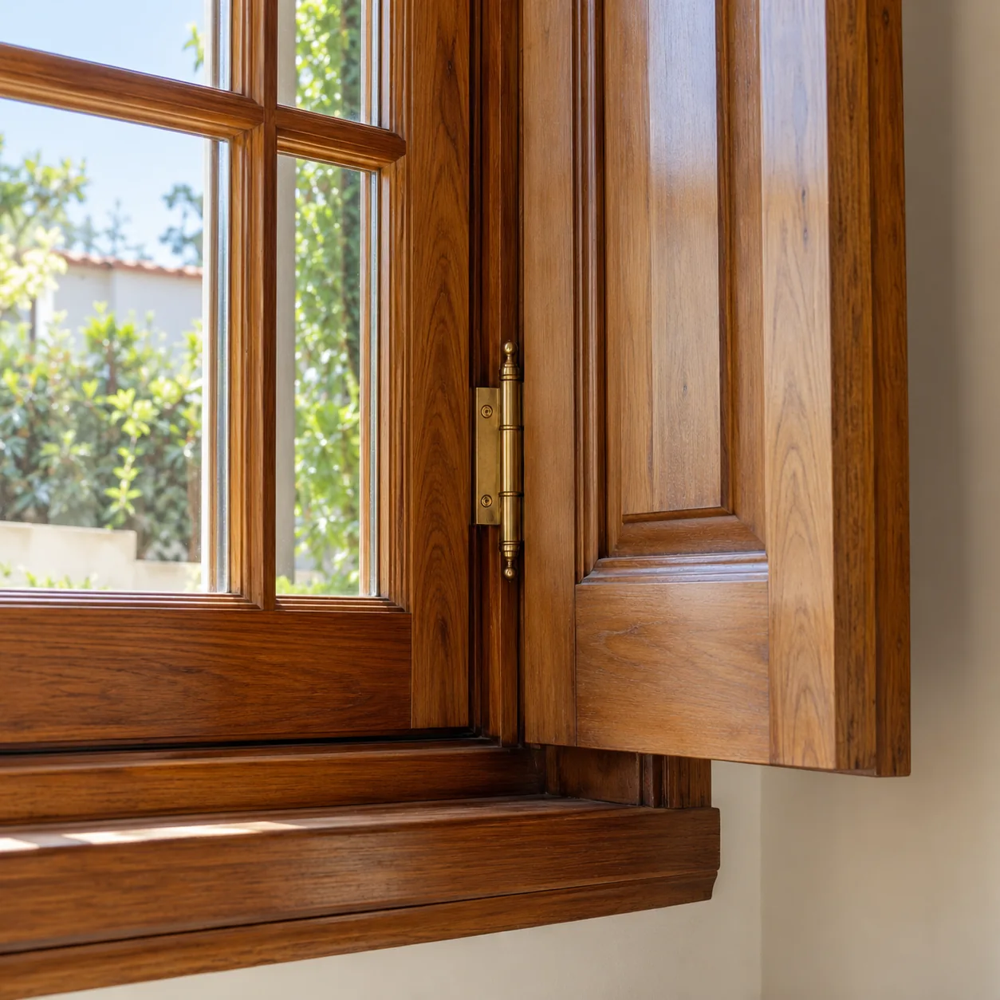
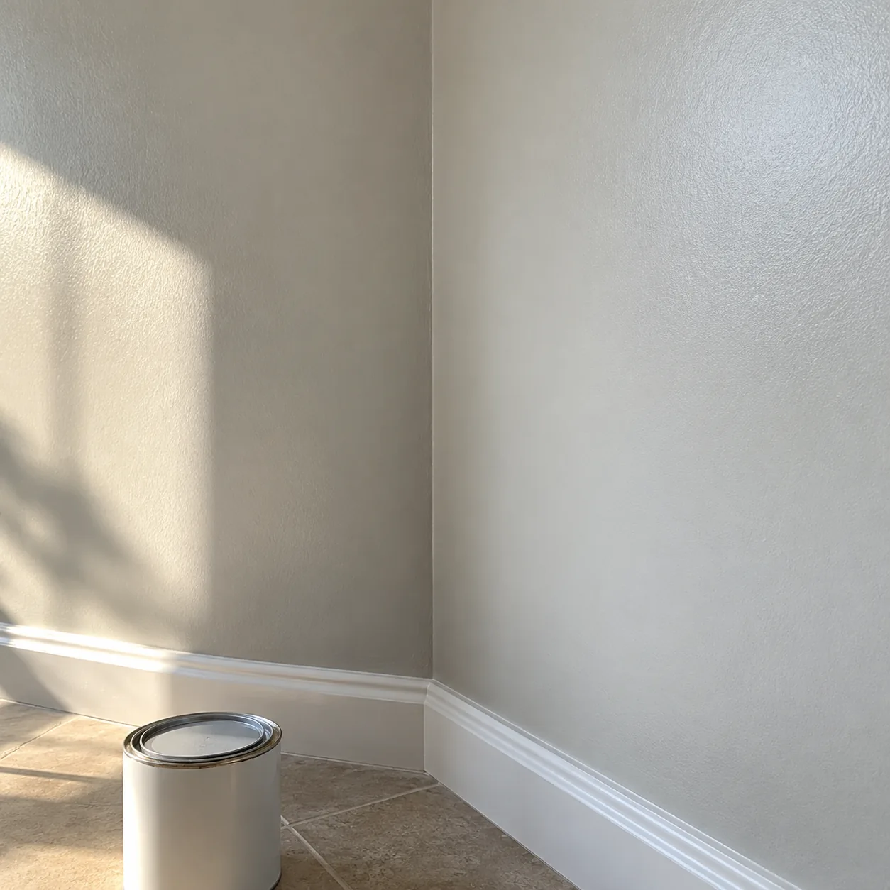

01 / CONSTRUCCIÓN EN SECO
Durlock, tabiques y cielorrasos
Soluciones para dividir, renovar y terminar espacios interiores.
PINTURA · DURLOCK · REFACCIONES
Pintura, Durlock, empapelados y refacciones en general para darle una nueva vida a cada ambiente.

ESPACIOS RENOVADOS ↗LO QUE HACEMOS
Trabajos de pintura y refacciones en general, desde la preparación de superficies hasta los detalles finales.

Soluciones para dividir, renovar y terminar espacios interiores.

Colocación de empapelados nacionales e importados.

Piezas pensadas para aprovechar mejor cada ambiente.

Preparación y terminación de superficies para un resultado prolijo.
Restauración de aberturas de madera · Pintura en general · Refacciones integrales

TRABAJOS Y DETALLES
Cada ambiente tiene sus posibilidades. Conversamos sobre lo que querés transformar y definimos el trabajo necesario, desde pintura y revestimientos hasta cielorrasos o muebles.
Hablemos de tu proyecto ↗EN IMÁGENES
Una muestra visual de los trabajos y terminaciones que podés imaginar para tu espacio.



PRIMER PASO
Una buena conversación ayuda a entender el ambiente y el alcance del trabajo.
Contanos qué espacio querés refaccionar o mejorar.
Conversamos sobre las medidas, materiales y terminaciones que buscás.
Definimos cómo avanzar con tu proyecto.
CONTACTO DIRECTO
Consultanos por pintura, Durlock, empapelados, muebles y refacciones.